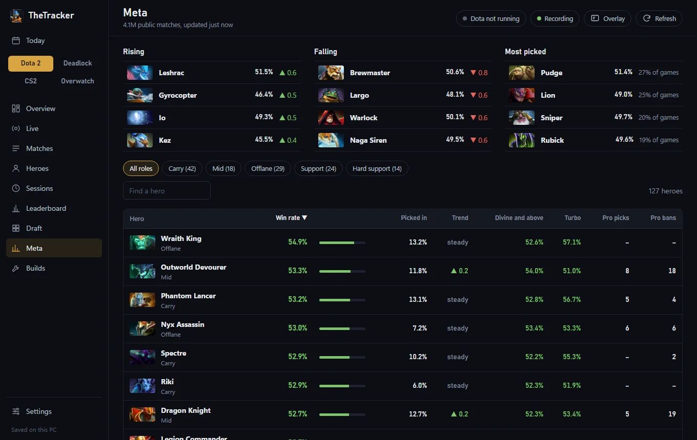

Your matches,
tracked as you play.
TheTracker is a free Windows app for Dota 2, Deadlock, Counter-Strike 2 and Overwatch. Live stats, your match history and the meta, all in one place.

One app, four games
Switch on the games you play. The rest stay out of your way.
Dota 2
Follows your match live: last hits at every 5 minutes against your own averages, each death and the gold it cost, item timings and your goals. Plus history, heroes, draft help, the meta and builds.
Deadlock
Your overview, matches with full scoreboards, heroes, the hero and item meta, and builds.
Counter-Strike 2
Round by round as you play: kills, damage, headshots, weapons, what you bought and how each round ended. Win rates by side, buy and map.
Overwatch
Career stats by mode, role and hero from your public profile, the hero meta with your own win rate beside it, and your sessions and ranks over time.
Made for while you play
- In-game overlay: a small see-through window over Dota 2 that counts down to runes, lotuses and the stack pull, and shows nothing otherwise.
- Sessions with tips: every recorded match compared with your others, your own notes, and plain tips like “most of your deaths come between 10 and 20 minutes”.
- Draft help: add the enemy picks as they come and see which heroes have done well against that lineup, with your own record on each.
- Today: one page with today's and this week's record, streaks and your last match in every game.
- Leaderboard: your best recorded games, and a shared board if you sign in.
- Notifications when a Dota 2 or CS2 match is saved, if you want them.
Plays fair
TheTracker never reads game memory. Dota 2 and CS2 send your own match state to the app through Valve's Game State Integration, and history comes from public sources like OpenDota, the Deadlock API and OverFast. It shows nothing about other players that the game doesn't already show you.
Questions
Anything else? Ask on GitHub.
How do I link my account?
Sign in with Steam on Steam's own page, so the app never sees your password. That links Dota 2 and Deadlock. Overwatch connects with your BattleTag, and your profile needs to be public.
Does it record games when it's closed?
No, only matches played while it's running. It can start with Windows and wait quietly in the tray.
Why is there no Valorant?
Riot only shares match data with apps it has reviewed and approved, with each player signing in through Riot. TheTracker doesn't have that yet, so it doesn't pretend to.
Where is my data kept?
On your PC, in %APPDATA%\TheTracker. Settings → General can back it up and restore it.
How does it update?
It updates itself, and checks the signature of every update before installing it.